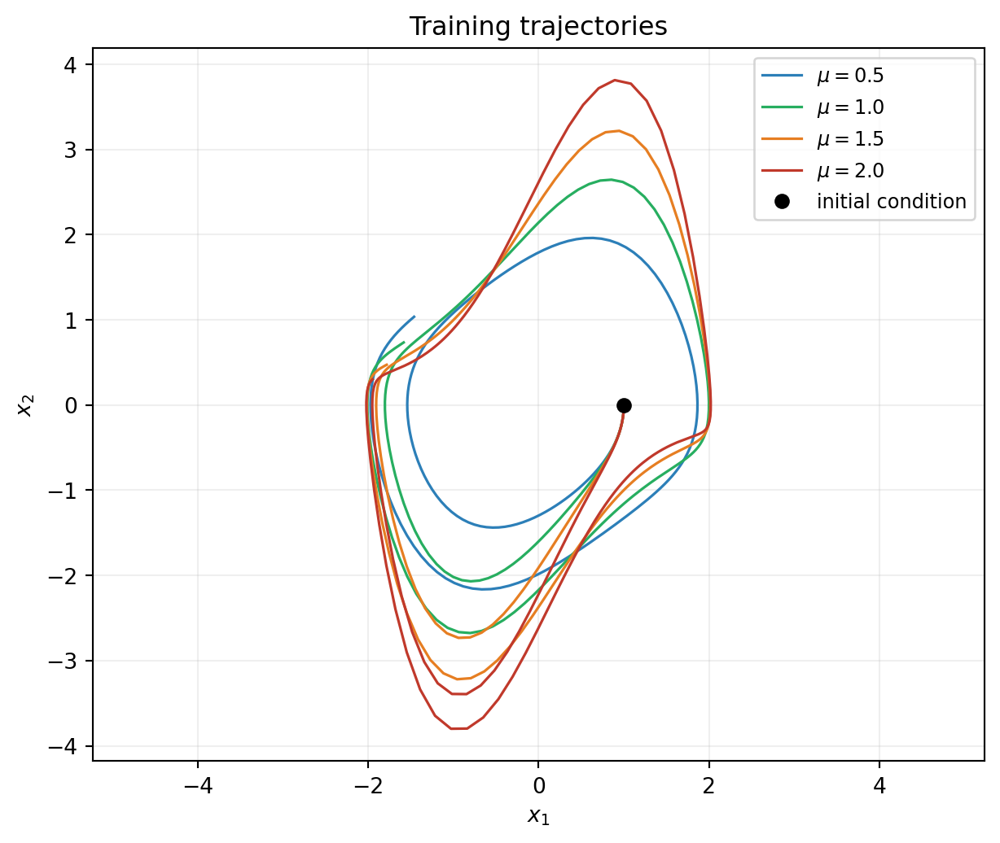
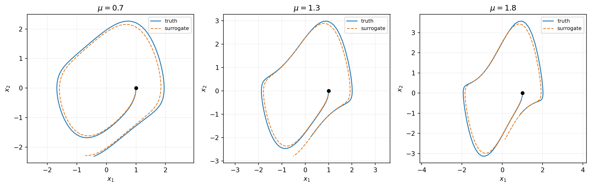
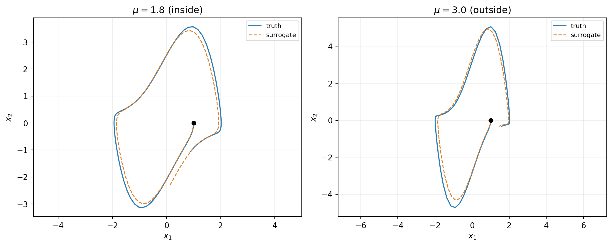

import numpy as np
import matplotlib.pyplot as plt
from scipy.integrate import solve_ivp
from pyapprox.util.backends.numpy import NumpyBkd
from pyapprox.probability import UniformMarginal
from pyapprox.surrogates.affine.basis import OrthonormalPolynomialBasis
from pyapprox.surrogates.affine.expansions import BasisExpansion
from pyapprox.surrogates.affine.expansions.fitters.least_squares import (
LeastSquaresFitter,
)
from pyapprox.surrogates.affine.indices import compute_hyperbolic_indices
from pyapprox.surrogates.affine.univariate import create_bases_1d
from pyapprox.surrogates.dynamical_systems import (
BatchedBoundODEResidual,
SnapshotDataset,
)
from pyapprox.ode.implicit_steppers.backward_euler import BackwardEulerAdjoint
from pyapprox.ode.implicit_steppers.integrator import TimeIntegrator
from pyapprox.util.rootfinding.newton import NewtonSolver
bkd = NumpyBkd()Parametric Dynamical Systems
PyApprox Tutorial Library
Learn an ODE right-hand side that depends on a system parameter, then predict trajectories at new parameter values via batched integration.
TipDownload Notebook
Learning Objectives
After completing this tutorial, you will be able to:
- Augment snapshot inputs with per-trajectory parameter values to fit a parametric
BasisExpansion - Choose training \(\mu\) values that bracket the prediction range
- Configure
BatchedBoundODEResidualwithmu_batchto integrate multiple trajectories simultaneously - Predict trajectories at new \(\mu\) values not in training
- Recognize parametric-coverage failure: predictions at \(\mu\) outside the training range
Prerequisites
This tutorial extends Derivative Matching from a single fixed system to a parametric family of systems indexed by a scalar parameter \(\mu\). The same four classes (SnapshotDataset, BasisExpansion, LeastSquaresFitter, BatchedBoundODEResidual) are used; the changes are in how training data is assembled and how the wrapper is configured for prediction.
Quick Recap
In the non-parametric case from the previous tutorial, the surrogate approximates \(f_\eta(\inputs)\) from snapshot pairs \((\inputs_i, \dot{\inputs}_i)\). When the underlying system has a parameter \(\mu\) that varies between trajectories, the surrogate target becomes \(f_\eta(\inputs, \mu)\), and each snapshot must carry the \(\mu\) value that produced it. Once fitted, a single surrogate predicts trajectories at any \(\mu\) via a standard ODE solve — no re-fitting required.
The Task
We use the parametric Van der Pol oscillator:
\[ \dot x_1 = x_2, \qquad \dot x_2 = \mu (1 - x_1^2)\, x_2 - x_1, \qquad \mu \in [0.5,\, 2.0]. \tag{1}\]
Training: integrate the true system at four \(\mu\) values \(\{0.5, 1.0, 1.5, 2.0\}\) from the same initial state \((1, 0)\) over \(t \in [0, 10]\).
Prediction: integrate the fitted surrogate from \((1, 0)\) at three new \(\mu\) values \(\{0.7, 1.3, 1.8\}\) — all inside the training range. Then, for comparison, also predict at \(\mu = 3.0\) which is outside the training range. Compare both to the true solutions.
Setup
Imports are identical to the previous tutorial; no new classes:
Step 1: Generate Training Trajectories at Multiple μ Values
We extend the truth helper from the previous tutorial to take \(\mu\) as an argument:
def true_vdp_trajectory(initial_state, times, mu):
"""Integrate Van der Pol at given mu with scipy RK45."""
def rhs(t, y):
return [y[1], mu * (1 - y[0] ** 2) * y[1] - y[0]]
sol = solve_ivp(
rhs, [times[0], times[-1]], initial_state,
t_eval=times, method="RK45", rtol=1e-10, atol=1e-12,
)
return bkd.array(sol.y)
mu_train = [0.5, 1.0, 1.5, 2.0]
times = bkd.linspace(0.0, 10.0, 201)
ic = [1.0, 0.0]
trajectories_train = [
true_vdp_trajectory(ic, bkd.to_numpy(times), mu=mu) for mu in mu_train
]
print(f"Trained on {len(mu_train)} trajectories, "
f"each with {trajectories_train[0].shape[1]} time points.")Trained on 4 trajectories, each with 201 time points.colors = ["#2C7FB8", "#27AE60", "#E67E22", "#C0392B"]
fig, ax = plt.subplots(figsize=(6.5, 5.5))
for traj, mu, color in zip(trajectories_train, mu_train, colors):
traj_np = bkd.to_numpy(traj)
ax.plot(traj_np[0], traj_np[1], lw=1.2, color=color, label=rf"$\mu={mu}$")
ax.plot(1.0, 0.0, "ko", markersize=6, label="initial condition")
ax.set_xlabel(r"$x_1$")
ax.set_ylabel(r"$x_2$")
ax.set_title("Training trajectories")
ax.legend(loc="upper right", fontsize=9)
ax.grid(True, alpha=0.2)
ax.set_aspect("equal", adjustable="datalim")
plt.tight_layout()
plt.show()
Step 2: Build a Parametric Snapshot Dataset
Each snapshot must carry the \(\mu\) value that produced it. The convention is input-row augmentation: alongside the two state rows \((x_1, x_2)\), add a third row holding \(\mu\). This is one-line bookkeeping per trajectory.
def parametric_snapshots(trajectory, times, mu, bkd):
"""Build a snapshot dataset whose input rows are (x_1, x_2, mu)."""
base = SnapshotDataset.from_trajectory(
trajectory=trajectory, times=times, bkd=bkd, fd_method="central",
)
n_pairs = base.nsamples()
mu_row = bkd.full((1, n_pairs), mu)
augmented_states = bkd.vstack([base.states(), mu_row])
return SnapshotDataset(augmented_states, base.derivatives(), bkd)
# Build one augmented dataset per training trajectory, then concatenate.
per_mu_datasets = [
parametric_snapshots(traj, times, mu, bkd)
for traj, mu in zip(trajectories_train, mu_train)
]
all_states = bkd.hstack([d.states() for d in per_mu_datasets])
all_derivs = bkd.hstack([d.derivatives() for d in per_mu_datasets])
dataset = SnapshotDataset(all_states, all_derivs, bkd)
print(f"Total snapshot pairs: {dataset.nsamples()}")
print(f"Input rows (state + mu): {dataset.nstates_input()}")
print(f"Output rows (state derivatives): {dataset.nstates_output()}")Total snapshot pairs: 796
Input rows (state + mu): 3
Output rows (state derivatives): 2Two things to notice:
nstates_inputis 3 (two state components plus the parameter), butnstates_outputis 2 (only the state derivatives).SnapshotDatasetsupports non-square mapping without complaint.- The augmentation is explicit, not hidden behind a convenience constructor. Real workflows often have \(\mu\) values that come from external metadata (experiment ID, simulation log, etc.), so the user retains control over how they are stamped onto the snapshots.
Step 3: Build the Parametric Basis Expansion
The basis now operates on a three-dimensional input \((x_1, x_2, \mu)\). We also raise the polynomial degree from 3 (in the previous tutorial) to 4 because the term \(\mu x_1^2 x_2\) has total degree 4 in the augmented input:
nvars = 3 # x_1, x_2, mu
nqoi = 2 # dx_1/dt, dx_2/dt
max_level = 4
state_marginals = [UniformMarginal(-3.0, 3.0, bkd) for _ in range(2)]
mu_marginal = UniformMarginal(0.0, 2.5, bkd)
marginals = state_marginals + [mu_marginal]
bases_1d = create_bases_1d(marginals, bkd)
indices = compute_hyperbolic_indices(nvars, max_level, 1.0, bkd)
basis = OrthonormalPolynomialBasis(bases_1d, bkd, indices)
expansion = BasisExpansion(basis, bkd, nqoi=nqoi)
print(f"Number of basis terms per output: {expansion.nterms()}")
print(f"Total free parameters: {expansion.nterms() * nqoi}")Number of basis terms per output: 35
Total free parameters: 70The marginal range for \(\mu\) is \([0, 2.5]\) — a bit wider than the training range \([0.5, 2.0]\), giving the basis margin on each side without being wildly extrapolatory.
Step 4: Fit by Least Squares
The fitter call is identical to the non-parametric case — the parametric structure is entirely in how the data was assembled:
fitter = LeastSquaresFitter(bkd)
result = fitter.fit(expansion, dataset.states(), dataset.derivatives())
fitted = result.surrogate()
residual = fitted(dataset.states()) - dataset.derivatives()
rms_residual = float(bkd.sqrt(bkd.mean(residual ** 2)))
print(f"Training RMS residual: {rms_residual:.3e}")Training RMS residual: 6.334e-03
NoteJoint fit vs. per-\(\mu\)-then-interpolate
A common alternative in the literature — used by operator inference (Peherstorfer & Willcox 2016) and several POD-based reduced-order modeling workflows — is to fit a separate surrogate \(f_{\params_j}\) at each training \(\mu^{(j)}\), then interpolate the coefficient vectors \(\{\params_j\}\) in \(\mu\) at prediction time. The joint approach used above is preferable in most cases for three reasons:
- Cross-coupling structure is captured directly. Terms like \(\mu\, x_1^2\, x_2\) in Equation 1 are individual basis functions in the joint fit; the per-\(\mu\) approach must rediscover this structure through coefficient interpolation.
- Every snapshot constrains every coefficient. Per-\(\mu\) fits each work with \(\nsamples/K\) snapshots (\(K\) = number of training \(\mu\) values, \(\nsamples\) = total snapshots); the joint fit uses all \(\nsamples\).
- No additional interpolation error. Per-\(\mu\)-then-interpolate stacks the coefficient-interpolation residual on top of the per-\(\mu\) fit residuals.
The per-\(\mu\) approach has its niche — very few training \(\mu\) values, structurally constrained per-\(\mu\) ansatz (e.g. quadratic ROM operators), very expensive per-\(\mu\) snapshot generation — but it is not the default when the joint fit is feasible.
Step 5: Predict at New μ Values with mu_batch
To predict trajectories at \(k\) new \(\mu\) values simultaneously, we wrap the fitted surrogate with BatchedBoundODEResidual and supply a mu_batch array of shape (n_params, k). The wrapper then internally appends mu_batch as fixed input rows for every state-evaluation during integration.
mu_test = [0.7, 1.3, 1.8]
k = len(mu_test)
# mu_batch shape: (n_params, k) — one row per parameter, k trajectories.
mu_batch = bkd.array([mu_test])
print(f"mu_batch shape: {mu_batch.shape}")
wrapper = BatchedBoundODEResidual(
learned_function=fitted,
n_dynamic=2,
mu_batch=mu_batch,
has_time_input=False,
)mu_batch shape: (1, 3)The wrapper validates at construction that fitted.nvars() == n_dynamic + has_time_input + n_params. Here \(2 + 0 + 1 = 3\), matching fitted.nvars().
Step 6: Batched Integration
The flat initial-state vector for \(k\) trajectories has length \(k \cdot n_\text{dynamic}\), with the per-trajectory components interleaved \([\text{traj}_0\, x_1, \text{traj}_0\, x_2, \text{traj}_1\, x_1, \ldots]\). A single solve() call then integrates all \(k\) trajectories simultaneously through a block-diagonal Newton system.
init_flat = bkd.array([1.0, 0.0] * k)
stepper = BackwardEulerAdjoint(wrapper)
newton = NewtonSolver(stepper)
newton.set_options(maxiters=30, atol=1e-10, rtol=1e-10)
integrator = TimeIntegrator(
init_time=0.0, final_time=8.0, deltat=0.05, newton_solver=newton,
)
predicted, pred_times = integrator.solve(init_flat)
print(f"Predicted shape: {predicted.shape} "
f"(n_dynamic*k = {2*k} rows, {predicted.shape[1]} time points)")Predicted shape: (6, 161) (n_dynamic*k = 6 rows, 161 time points)The output (n_dynamic*k, ntimes) array stacks the \(k\) trajectories. To recover trajectory \(i\), slice rows i*n_dynamic through (i+1)*n_dynamic.
Step 7: Validate Against Truth
Generate truth trajectories at each test \(\mu\) via scipy RK45, then plot truth and surrogate side by side:
truths_test = [
true_vdp_trajectory([1.0, 0.0], bkd.to_numpy(pred_times), mu=mu)
for mu in mu_test
]
for i, mu in enumerate(mu_test):
pred_i = predicted[i*2 : (i+1)*2, :]
err_i = float(bkd.max(bkd.abs(pred_i - truths_test[i])))
amp_i = float(bkd.max(bkd.abs(truths_test[i])))
print(f"mu={mu}: max abs error {err_i:.3e}, "
f"relative {err_i/amp_i:.3e}")mu=0.7: max abs error 3.015e-01, relative 1.306e-01
mu=1.3: max abs error 9.723e-01, relative 3.254e-01
mu=1.8: max abs error 2.022e+00, relative 5.665e-01fig, axes = plt.subplots(1, 3, figsize=(13, 4.2))
for i, (ax, mu) in enumerate(zip(axes, mu_test)):
pred_np = bkd.to_numpy(predicted[i*2 : (i+1)*2, :])
truth_np = bkd.to_numpy(truths_test[i])
ax.plot(truth_np[0], truth_np[1], lw=1.4, color="#2C7FB8", label="truth")
ax.plot(
pred_np[0], pred_np[1], "--", lw=1.2, color="#E67E22",
label="surrogate",
)
ax.plot(1.0, 0.0, "ko", markersize=5)
ax.set_xlabel(r"$x_1$")
ax.set_ylabel(r"$x_2$")
ax.set_title(rf"$\mu = {mu}$")
ax.legend(fontsize=8)
ax.grid(True, alpha=0.2)
ax.set_aspect("equal", adjustable="datalim")
plt.tight_layout()
plt.show()
mu_batch entries; the surrogate (orange dashed) tracks the truth (blue) at each \(\mu\). The fitted RHS is a function of \((x_1, x_2, \mu)\) jointly, so a single integration step at any \(\mu\) inside the training range is supported.
Step 8: Parametric Coverage and Extrapolation
The previous tutorial discussed coverage in state space: snapshots must cover the region where the surrogate will be evaluated. In the parametric case the same principle applies in two directions — both state space and parameter space. We trained on \(\mu \in \{0.5, 1.0, 1.5, 2.0\}\), so the surrogate is interpolating in \(\mu\) as long as the test \(\mu\) stays inside \([0.5, 2.0]\). Outside this range it extrapolates.
Run a clean head-to-head: predict at \(\mu = 1.8\) (inside the training range) and at \(\mu = 3.0\) (well outside). Both predictions use the same fitted surrogate; only mu_batch changes.
mu_extrap = [1.8, 3.0]
mu_batch_extrap = bkd.array([mu_extrap])
wrapper_extrap = BatchedBoundODEResidual(
learned_function=fitted, n_dynamic=2, mu_batch=mu_batch_extrap,
)
stepper = BackwardEulerAdjoint(wrapper_extrap)
newton = NewtonSolver(stepper)
newton.set_options(maxiters=30, atol=1e-10, rtol=1e-10)
integrator = TimeIntegrator(
init_time=0.0, final_time=8.0, deltat=0.05, newton_solver=newton,
)
predicted_extrap, t_extrap = integrator.solve(bkd.array([1.0, 0.0] * 2))
truths_extrap = [
true_vdp_trajectory([1.0, 0.0], bkd.to_numpy(t_extrap), mu=mu)
for mu in mu_extrap
]fig, axes = plt.subplots(1, 2, figsize=(11, 4.5))
for ax, i, mu in zip(axes, [0, 1], mu_extrap):
pred_np = bkd.to_numpy(predicted_extrap[i*2 : (i+1)*2, :])
truth_np = bkd.to_numpy(truths_extrap[i])
label_suffix = " (inside)" if 0.5 <= mu <= 2.0 else " (outside)"
ax.plot(truth_np[0], truth_np[1], lw=1.4, color="#2C7FB8", label="truth")
ax.plot(
pred_np[0], pred_np[1], "--", lw=1.2, color="#E67E22",
label="surrogate",
)
ax.plot(1.0, 0.0, "ko", markersize=5)
ax.set_xlabel(r"$x_1$")
ax.set_ylabel(r"$x_2$")
ax.set_title(rf"$\mu = {mu}${label_suffix}")
ax.legend(fontsize=8)
ax.grid(True, alpha=0.2)
ax.set_aspect("equal", adjustable="datalim")
plt.tight_layout()
plt.show()
The takeaway is simple: training \(\mu\) values must bracket the prediction regime. If you need predictions at \(\mu = 3.0\), retrain with snapshots that include \(\mu\) values near 3. The surrogate is a polynomial in \((x, \mu)\) and behaves like a polynomial outside its design range — coefficients chosen to interpolate the training \(\mu\) values cannot be expected to extrapolate.
Common Errors
Three failures users hit when extending from non-parametric to parametric workflows:
Forgot to augment the state with \(\mu\). Symptom: ValueError from LeastSquaresFitter.fit complaining about input/output dimension mismatch. Fix: ensure dataset.nstates_input() equals expansion.nvars(). The augmentation step (the parametric_snapshots helper above) is easy to miss when adapting non-parametric code.
Forgot mu_batch at prediction time. Symptom: ValueError from BatchedBoundODEResidual complaining about an nvars mismatch (fitted.nvars() = 3 but n_dynamic + 0 + 0 = 2). Fix: pass mu_batch with the right shape.
mu_batch shape wrong. Symptom: ValueError again, this time about a n_params mismatch. Fix: mu_batch.shape == (n_params, k). For a one-parameter system, \(n_\text{params} = 1\), so mu_batch is a \(1 \times k\) row. For higher-dimensional parameter vectors, \(n_\text{params}\) is the parameter dimension and mu_batch has one row per parameter.
Summary
The parametric workflow uses the same four classes as the non-parametric case. Two specific extensions:
- Input augmentation: every snapshot carries the \(\mu\) value that produced it as an additional input row. The basis expansion’s
nvarsmatches the augmented dimension. mu_batchat prediction: the wrapper receives a(n_params, k)array specifying the \(\mu\) value for each of the \(k\) trajectories to be integrated batched.
The fit-once, predict-anywhere property holds within the training \(\mu\) range. Outside that range the surrogate extrapolates poorly — training values must bracket the prediction regime.
The next tutorial, Hamiltonian Systems, introduces a different kind of structure: when the system is Hamiltonian (\(\dot{\inputs} = \mt{J}\, \nabla \mathcal{H}(\inputs)\)), parametrizing the surrogate directly via \(\mathcal{H}_\params\) instead of \(f_\params\) enforces energy conservation by construction. The benefit is qualitative and quantitative: the surrogate’s trajectories preserve the Hamiltonian along the flow, with implications for long-time prediction accuracy.
References
- Peherstorfer, B., & Willcox, K. (2016). Data-driven operator inference for nonintrusive projection-based model reduction. Computer Methods in Applied Mechanics and Engineering. Introduces operator inference, the most common per-\(\mu\) fit-then-interpolate workflow for ROM.
- Benner, P., Goyal, P., Kramer, B., Peherstorfer, B., & Willcox, K. (2020). Operator inference for non-intrusive model reduction of systems with non-polynomial nonlinear terms. Discusses extensions of operator inference and the relationship to joint-fit approaches.